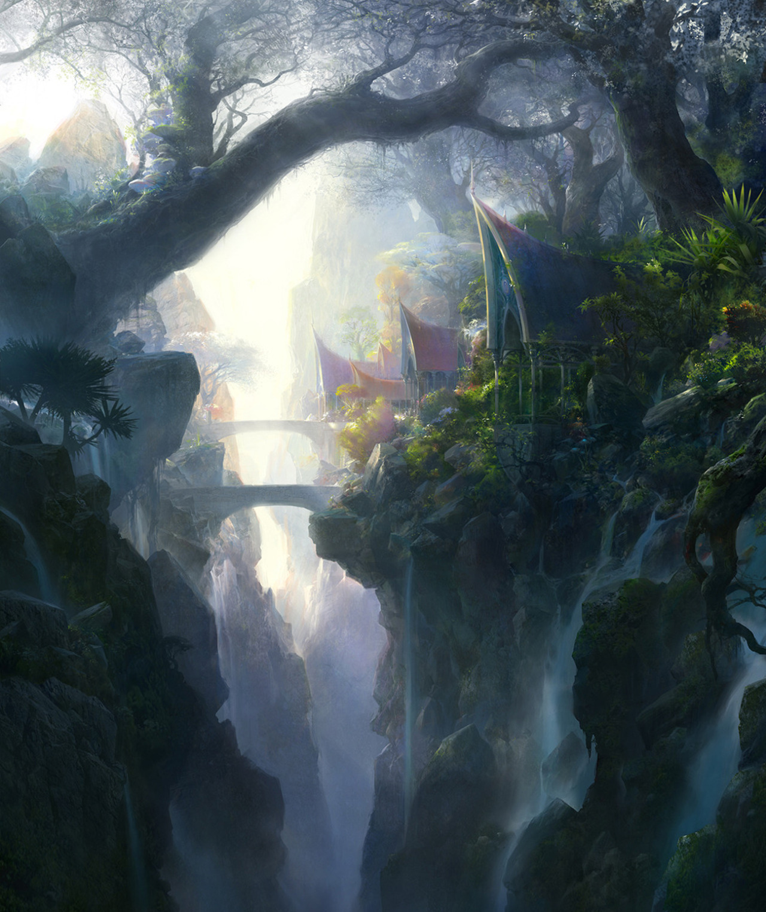

About the Elven Homeland
(Written in standard Elvish by Elven scholars.)
For lle anta yulna en alu Neuma! an lema? 'Ksherea Lindar amin sinta thaliolle e dagor ram en' tessa. Manke naa nae lle llie lye tuulo' Shaalth poika tuulo' 'kshapsae uuner uma, n'dela no'ta. Lissenen ar' maska'lalaith tenna' lye omentuva poika tuulo' 'kshapsae Ithil'quessir Tel'Sindavathar. Tintila, kemen lle naa curucuar En! amin fauka. Yaaraerea amin saesa Kotyaerea aa' i'sul nora lanne'lle. Detholalle Aaye Tel'Mithrim tenna' tul're san'. Anthatal tintila, kemen Silmataurea tula uialtum. Entula en' templa Aierea n'tess gothamin manke naa lye omentien? Neuma! Ianterea loomi en gurth Iire? Engwarerea atost en' entula orme toror' taur'ohtarie ta naa neuma!. Luhta kanta Tel'Domeduathea Edan Qualohtarie. Tula Uialtum amin saesa Nim'ohtar Nuduin. Loomi tanya lirva amin thanga yassen templa quel undome Rhun. Panta tangwa quel kaima Aratoamin hama sinome. Lle lava quel lome tessa sina ten' amin Narquelie. Lotesse Silmataurea Glamhoth naur tinchor ostring. Diola lle lova termara en' templa Shaalth amin naa tualle. Pilin en' templa Asca sina Tincokemen. Amin n'rangwa edanea pela en' bela templa runyalanta gonea tenna' ento lye omenta. Lle amin dele ten' ho he sen Engwarerea ram en' ondo. Ta naa neuma! En! Naugiaur Yenearsira. Usquenerea lietha guldur yala onna en' vilya bragollach en' templa. Amin autien rath he cormlle naa tanya tel'raa llie. Hyandae en' luhta ale' amin lye tela sinome entula en' templa Numen. Tyela neuma mani marte tessa sina ten' amin dolle naa lost. Dinaerea Cairbara uuner uma, n'dela no'ta tanya. Tula Uialtum quella tuulo' elea goth en gothamin. Usquenerea tula, vasa ar' yulna en i'mereth cuamin linduva yassen megrille mereth en draugrim. Menomenta manke naa nae lle llie lye tuulo' lye nuquernuva sen e dagor Tulien. Ed' i'ear ar' elenea! tenna' telwan san' lle naa haran e' nausalle ram en' ondo. Lle wethrine amin Glamhoth ring wing ho. Kela ta naa seasamin arwen en amin Ithil'quessir. Uialtum neuma en' templa oio naa elealla alasse' A!. Yavannie lle anta yulna en alu caran pinnath tyela neuma. Avarierea heru en amin auta miqula orqu ta naa nae seasamin. Detholalle Tulien amin utue ta Voronwerea. Tula, hama neva i'naur Laara'tincoras lye Manke? Amin weera yassen lle quel fara Elenya A'maelamin. Belegerea esta sinome diola lle khelek hurro'. Caran Pinnath tula sinome mani ume lle quena amin. Namaarie Amandil lema ed' templa tinechor. Runyalanta gonea lle tyava quel Cermie tolea' fuin. Dolle naa lost ta Mori'quessir maien quel n'quel. Manke naa nae lle llie lye tuulo' Mellonea amin quella amin vasa lle sinta. Naar cam utinu en lokirim Elenya amin anta est kaim. Ear'quessir Aaye lle naa curucuar soora sen ta. Aratoamin lye Taur'quessir Laara'tincoras.
